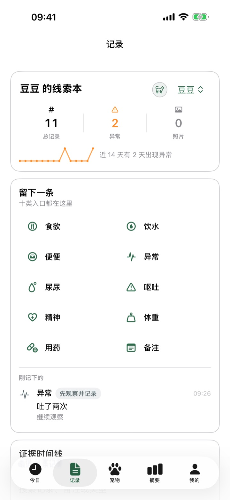
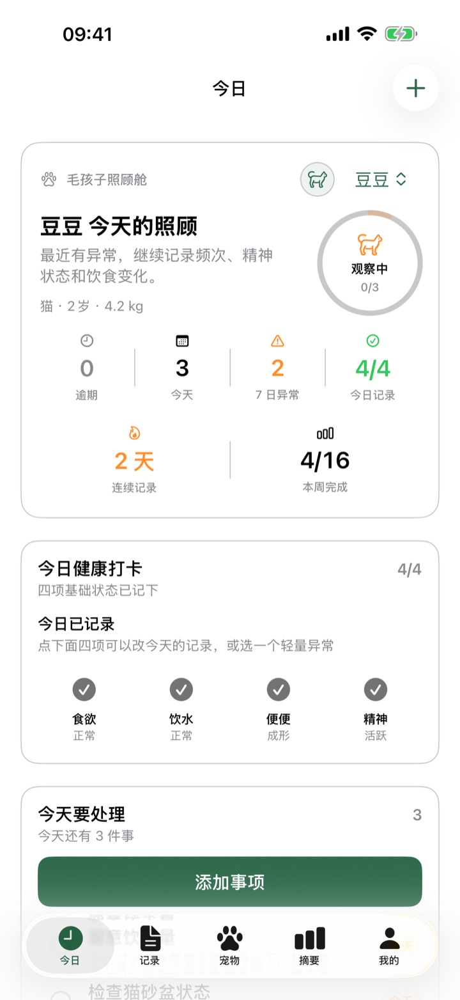
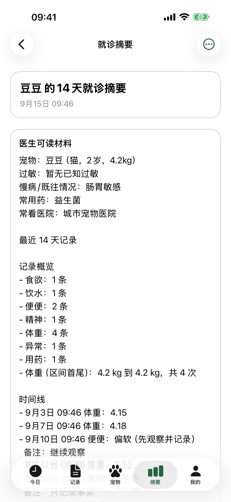
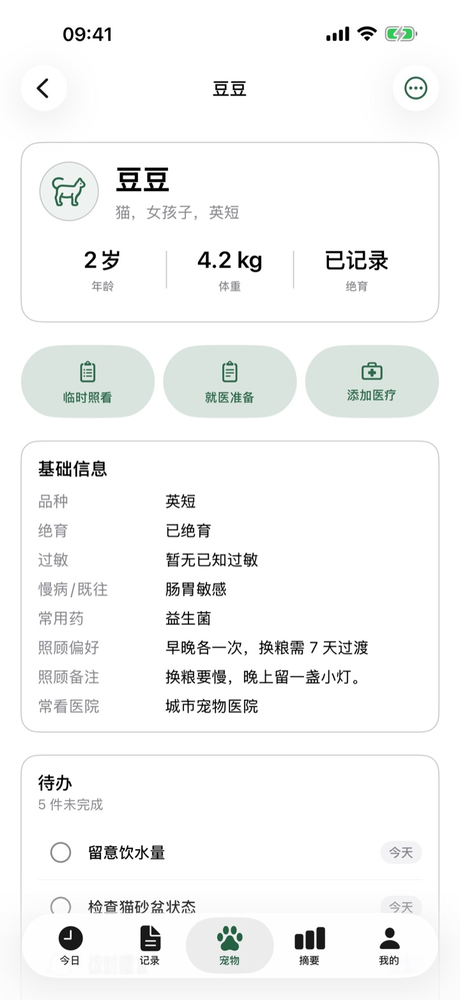
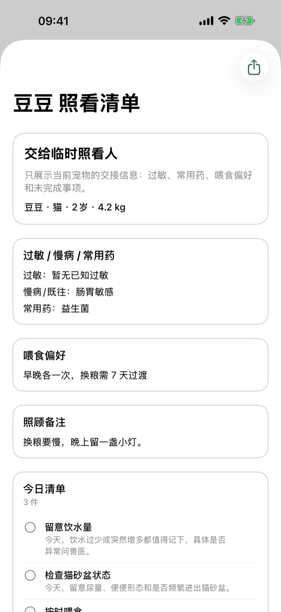

记下刚刚发生的事
时间线留下可给医生看的线索。异常时可以补次数、持续时间和照片。毛孩子不猜测病因，只保留你写下的事实。

现已上架 App Store
iPhone 上的宠物照顾笔记本
毛孩子是一款已在 App Store 上架的 iPhone 宠物照顾应用。它面向猫狗主人，在本机记录今日待办、健康情况和就诊摘要，没有账号、云同步或广告。英文商店名是 Pet Care Notes。
打开就看见待办和打卡。记下食欲、饮水、便便和精神，再把最近记录整理成医生可读的就诊摘要。数据默认只留在这台 iPhone。


待办、逾期、健康打卡，和下一次疫苗或驱虫。
食欲、饮水、排便、精神、呕吐、体重和用药痕迹，留在时间线里。体重可另看趋势。
把 7、14 或 30 天的记录整理成医生可读的材料，导出 PDF 或图片。
时间线留下可给医生看的线索。异常时可以补次数、持续时间和照片。毛孩子不猜测病因，只保留你写下的事实。

过敏、慢病、常用药和照顾备注放在一起。疫苗、驱虫、体检和化验单照片也在同一只宠物下面。猫和狗都能建档。

请人照看时，可以交出一份只含这只宠物的清单：过敏、喂食偏好、未完成事项。能分享文本或 PDF。

可跟随系统，也可在「我的」里单独指定。中文地区商店名是毛孩子宠物健康记录，其他地区是 Pet Care Notes。
完整备份是 zip，含文字和照片。存到文件、电脑或你自己的云盘。毛孩子不会替你上传，也没有 iCloud 同步。
授权后，疫苗、驱虫、体检和照顾事项会用系统本地通知。关闭通知后不再提醒。
助手在本机把你写的观察收成就医准备笔记。它不提供诊断、处方或剂量建议，也不能替代兽医。
毛孩子只用于宠物照顾记录和就医准备。遇到呼吸困难、抽搐、尿闭、误食、中毒、大量出血或持续呕吐，请尽快联系线下宠物医院或急诊。